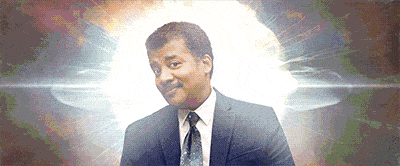

Conceiving Creative Pens
Tim Severien
I do CodePens
At least one a week.

WARNING
This presentation might potentially trigger seizures for people with photosensitive epilepsy.
Viewer discretion is advised.
Inspiration

Borrow stuff
Science

By Jeff Thomas (codepen.io)


Doodles
Writing code without giving it much thought.
 http://imgur.com/0het78q
http://imgur.com/0het78q